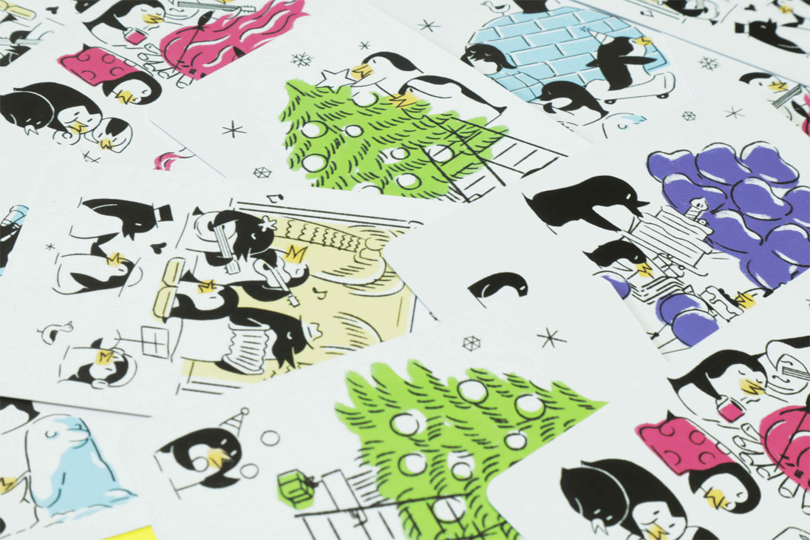
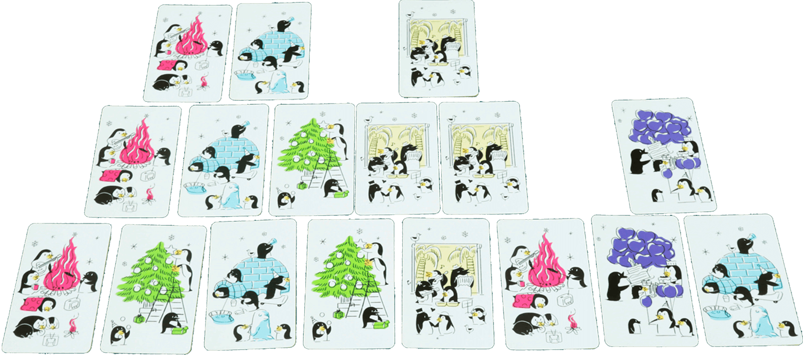
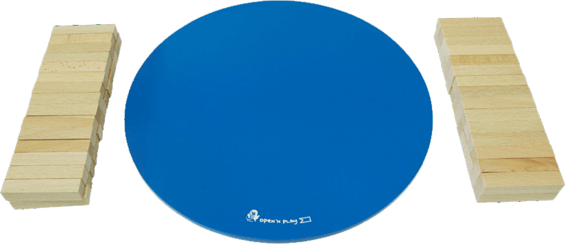
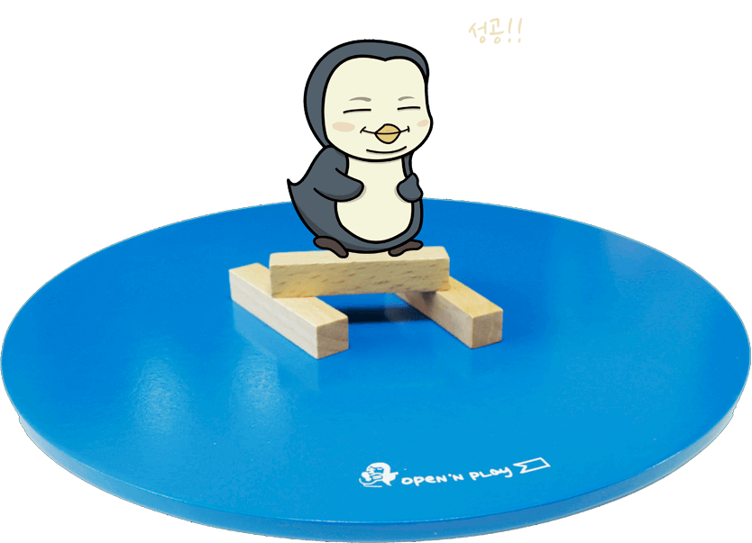
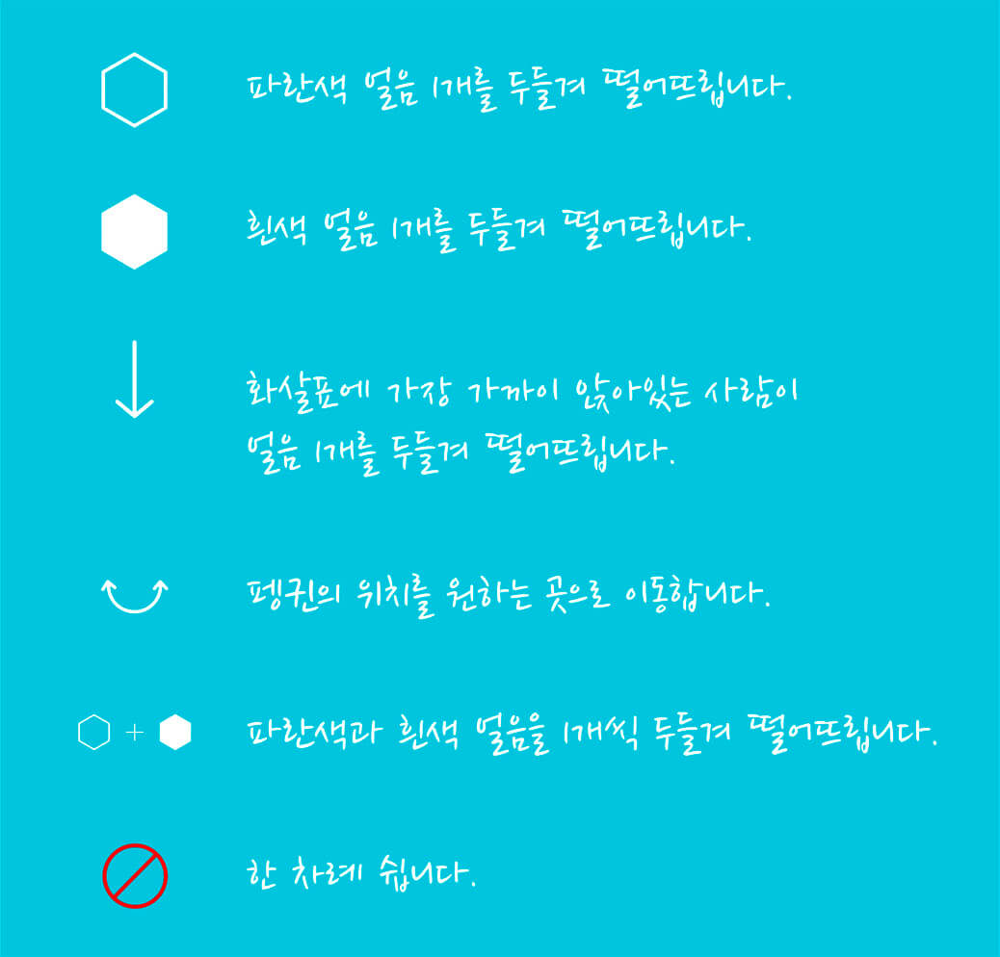
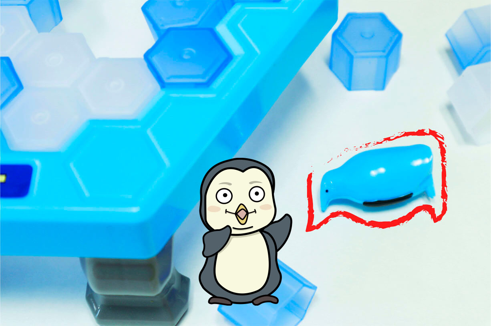
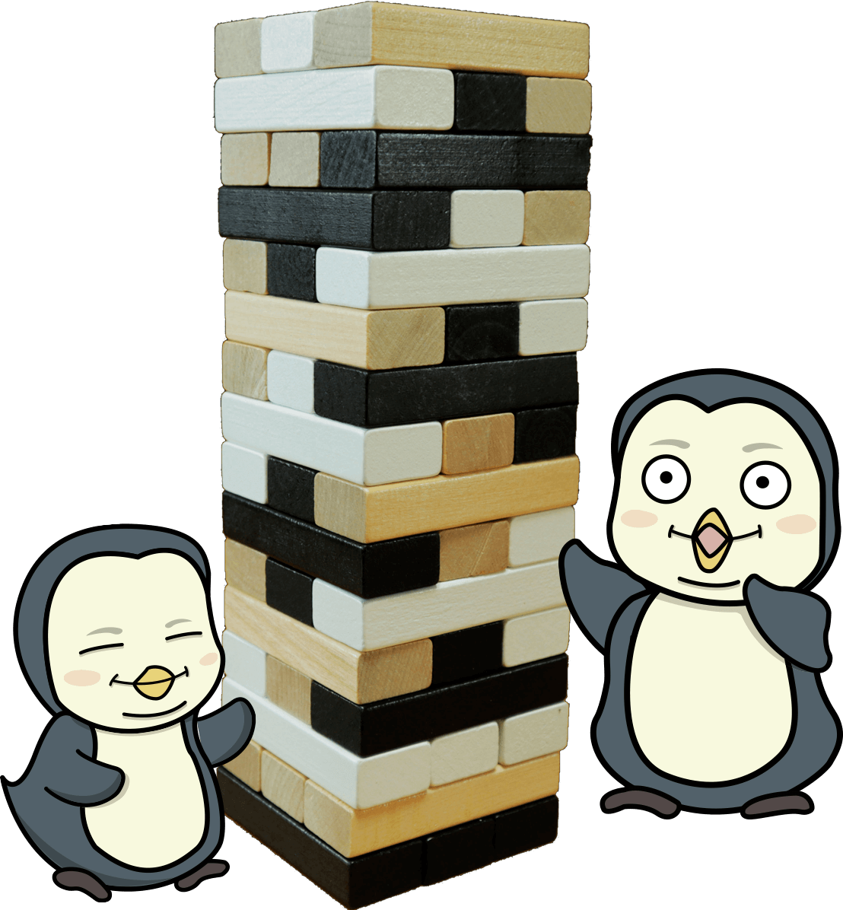
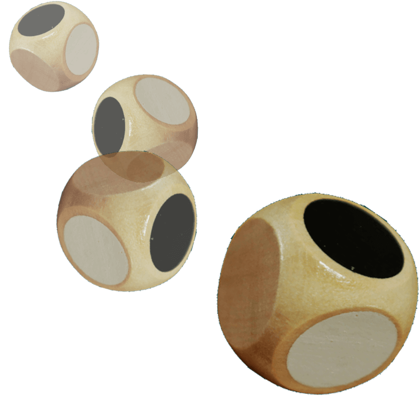
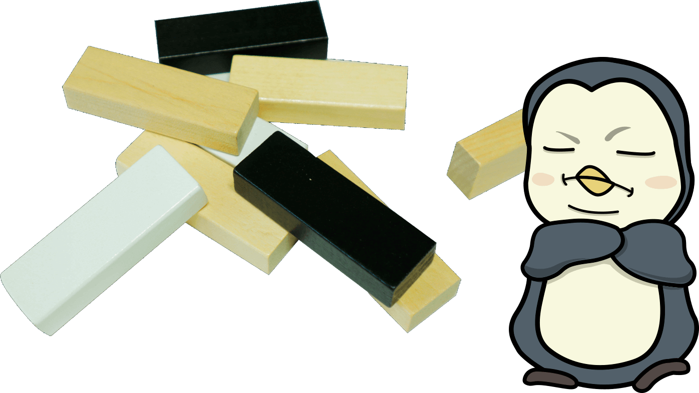

쉽고 간단한 규칙으로
누구나 즐길 수 있는 펭귄 보드게임
4만원에 4가지 게임을 즐겨보세요!
1. 펭귄파티
2. 펭귄타쏘
3. 펭귄팡팡
4.펭귄스택
상품설명
펭귄파티는 카드를 피라미드 모양으로 쌓으며 가능한
많은 카드를 내려놓아야하는 게임입니다. 규칙은 쉽지만
전략이 필요한 게임입니다!
펭귄카드 36장(4색 7장씩, 하늘색 8장), 벌점 토큰 (흰색 20개, 파란색 10개)
펭귄카드를 섞어서 둘이 똑같이 나눕니다.

펭귄카드를 8층 피라미드 식으로 번갈아 가며 내려놓습니다.
(1층에는 8장, 2층에는 7장 순으로)
1층에는 원하는 카드를 내려 놓을 수 있지만, 2층부터는
아래에 놓인 카드 2색 중 어느 한 색의 카드만 내려 놓을 수 있습니다.
더이상 카드를 내려 놓을 수 없다면, 즉시 라운드에서 빠지고
남은 카드 수 만큼 벌점 토큰을 받습니다. 아무도 카드를 낼 수 없게 되면 그 라운드는 끝이 납니다.
펭귄타쏘는 자신의 스틱을 먼저 다 사용해서
없애는 게임입니다. 2층, 3층, 또는 4층으로 스틱을 올릴 수 있다면
자신의 스틱을 한 번 더 쓸 수 있습니다.
보드1개, 타쏘 스틱 60개, 미끄럼 방지 스티커 3개
모든 스틱을 똑같이 나누어 가집니다.

1개의 스틱을 보드 위에 내려 놓거나 다른 스틱
2개의 스틱 위에 걸쳐 놓습니다. (스틱을 다른 2개의 스틱 위에
더 놓을 수 있다면 한 번더 놓을 수 있습니다.)
게임 도중 스틱을 떨어뜨리게 되면, 떨어뜨린 스틱을
모두 가져오고 상대의 스틱 1개를 가져와야 합니다.
이후 자신의 스틱을 먼저 없앤 사람이 이기게 됩니다!
펭귄팡팡은 스틱으로 얼음 블럭을 두드려 떨어뜨리는
게임입니다. 펭귄이 떨어지지않게, 얼음 블럭만 떨어뜨릴 수 있을까요?
보드 1개, 얼음블럭 38개(흰색 19개, 파란색 19개),
받침대 4개, 펭귄 말 1개, 주사위 1개, 망치 2개
얼음블럭을 보드에 끼우고, 펭귄 말을 올려둡니다.
주사위를 굴리고 써있는 내용대로 행동합니다.
얼음 블럭에서 펭귄이 떨어지면 게임에서 지게 됩니다.
펭귄스택은 주사위를 굴려 나타난 색의 블럭 중
1개를 뽑아 탑의 맨위층에 쌓습니다.
탑이 무너지지 않게 잘 뺄 수 있을까요?
블럭 48개, 주사위 1개
각층이 직각으로 엇갈리게 탑을 쌓습니다.
주사위를 굴려 나타난 색의 블럭 중 1개를 뽑아 맨 위층에 쌓습니다.
블럭을 뽑다가 탑이 무너지면 게임에서 지게 됩니다.
펭귄 보드게임은 여럿이 모일 필요 없이
두 명이서도 게임이 가능합니다. 귀여운 펭귄 일러스트가
게임을 더 재밌게 만들어줄 거예요!